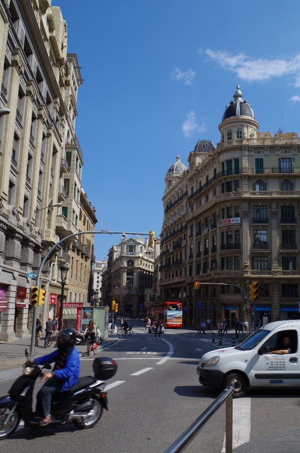

Catalan Architecture
From Gothic to Gaudi
 A subset of Catalan art that cannot be removed from any discussion is that of Catalan architecture. Catalunya, and its capitol city Barcelona in particular, is the scene of a myriad of different styles of architectural age and practice. It has examples of Gothic architecture from the Romans and the Modernismo architecture brought in by visionaries like Antoni Gaudi. Walking through any street is a melting pot of these styles with a mix of traditional Spanish architecture.
 The Barri Gotic or Gothic Quarter for example is the result of the Roman Empire with its Catalan Gothic architecture iconic of the city. This area is home to tight, narrow streets, and ornate stonework especially in and around the cathedrals. I was lucky enough to have spent my time in Barcelona living in the Barri Gotic directly across from the Cathedral of the Holy Cross and Saint Eulalia (left) the perfect example of Catalan Gothic Architecture.
The Barri Gotic or Gothic Quarter for example is the result of the Roman Empire with its Catalan Gothic architecture iconic of the city. This area is home to tight, narrow streets, and ornate stonework especially in and around the cathedrals. I was lucky enough to have spent my time in Barcelona living in the Barri Gotic directly across from the Cathedral of the Holy Cross and Saint Eulalia (left) the perfect example of Catalan Gothic Architecture.
Antoni Gaudi
It is impossible to talk about Catalan architecture without discussing one of its most prominent figures; the world famous architect Antoni Gaudi. He is attributed with the creation and near perfection of the Catalan modernist architecture movement. Gaudi is responsible for the creation of immense works known internationally, seven of which are Unesco World Heritage Sites. Of his incredible works the most famous internationally are La Sagrada Familia, his life’s work, and final work, which is still under construction to this day, Parq Guell in the northern part of Barcelona, Casa Mila also known as La Pedrera, and Casa Batllo with its dragonesque theme that draws the imaginations of locals and tourists worldwide.
Gaudi was born in 1852 in Reus, Catalunya to a family of boilermakers which is where he got his first foray into manipulating space and had an affinity for it even as a child. As seen in many of his works, Gaudi believed in following the laws of nature instead of the laws of man when building his vast pieces. He moved to Barcelona in 1870 to study architecture and upon his graduation in 1878 the director of his Architecture program said: “I do not know if we have awarded this degree to a madman or to a genius; only time will tell.” Little did he know the visionary that had left his halls.


Images: © RyanPGilpin